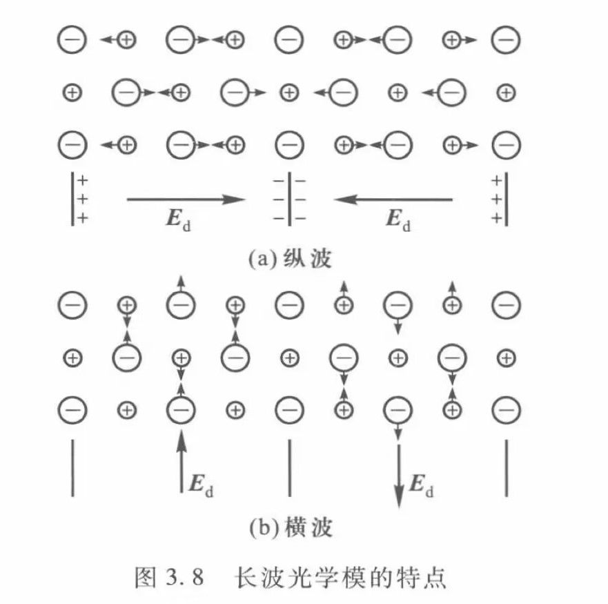

晶格振动
一维单原子链
加入简谐近似（既认为单原子链的相互作用截断到位移的二阶项），以及只考虑最近邻原子的作用后，得运动方程：\(M\frac{d^2u_n}{dt^2}= \beta(u_{n+1}+u_{n-1}-2u_n)\)
代入周期性边界条件以及周期性的平移对称不变性，我们得到通解以及色散关系：
\[\begin{aligned} u_n = \sum^{}_{l} A_l e^{-iw_lt}e^{inaq} \\\\w^2(q)= \frac{2\beta}{M}(1-cosqa) \end{aligned}\]一维双原子晶格振动
同样的方法解出色散关系
\[ w^2(q) = \frac{\beta}{M_1M_2}[M_1+M_2 \pm \sqrt{M_1^2+M_2^2+2M_1M_2cosqa}] \]

在q趋向于0的时候，\(w\)趋向于0的波称为声学支。声学支代表的振动模式相邻原子振动方向同向，另一支称为光学支，相邻原子振动方向相反，同时由于这种振动模式会产生迅速变化的电偶极矩，与光发生相互作用。
三维的同理，N个原胞，每个原胞s个原子，解出来(没证明)3支声学波，\(3s-3\)支光学波
4. 声子
单原子链晶格振动的量子化(简谐近似，只考虑最近邻原子间的相互作用)：
欲对\(H\)的形式进行变化方便看出具体形式，做变量代换：
\(u_n(t) = \sum^{}_{l} A_l(t) e^{-iw_lt}e^{inaq_l}\)，其中\(q_l=\frac{2\pi l}{Na},-\frac{N}{2}\leq l<\frac{N}{2}\)
令 \(Q_l(t) = (NM)^{\frac{1}{2}}A_l e^{-iw_l t}\) 则
\[\begin{aligned} u_n = (NM)^{-\frac{1}{2}}\sum^{}_{l}Q_l e^{inaq_l} \\\\Q_l = (\frac{M}{N})^{1/2}\sum_n u_ne^{-inaq} \end{aligned}\]正交性条件：\(\frac{1}{N} \sum_n e^{ina(q_l-q_{l'})} = \delta _{ll'}\) (易证)
\[\begin{aligned} T &= \frac{M}{2} \sum^N_n \dot u_n^2 \\\\ &= \frac{1}{2N} \sum^N_{n=0} \sum_{l'}\sum_l \dot Q_l \dot Q_{l'}e^{ina(q_l+q_{l'})} \\\\ &= \frac{1}{2} \sum_l \sum_{l'} \dot Q_l \dot Q_{l'} \delta_{ll'} \\\\ &= \frac{1}{2} \sum_l \dot Q_l ^2 \end{aligned}\]由\(u_n\)为实数可推得 \(Q_l* = Q_{-l}\)
第二行由定义，第三行由正交性条件
第三个等号来源于周期性边界条件，第六个等号来源于\(V\)是实数，所以可以取实部，第七个等号来源于一维振子解的色散关系，可以理解为用这个定义了\(w_l\)，显然是一个谐振子哈密顿量，后面可以把对应的能量子定义为声子。
声子性质
从基态\(n_l = 0\) 到激发态\(n_l (≠ 0)\) 的能量差为\(n_l ћω_l\)，这一过程可以看成是产生了\(n_l\)个频率\(ћω_l\)的声子，每个声子的能量为\(ћω_l\)。（元激发）波矢q的方向代表格波的传播方向，也代表声子的运动方向，\(\hbar q\) 称为声子的准动量。
离子晶体的红外光学性质
光学模
光学模是正负离子相对振动的一种振动模式，如图所示：

纵波由于离子移动形成了指向回复方向的极化电场，所以振动变快，频率高于不会形成极化电场的横波。同时由于电磁波为横波，只有横光学模能够与电磁波发生耦合。
黄昆方程
\[\begin{aligned} \frac{d^2W}{dt^2} = b_{11} W +b_{12}E \\\\ p = b_{12}W +b_{22}E \end{aligned}\]\(W = (\mu n)^{-\frac{1}{2}}(u_+ - u_-)\)，\(n\) 为单位体积内的原胞数，\(\mu\) 是折合质量，\(u_+(u_-)\)是正(负)离子的振动位移，\(b_{ij}\)为待定系数。
LST关系
\[\begin{aligned} b_{11}&= -w_{TO}^2 \\\\ \epsilon(0) &= \frac{w^2_{LO}}{w^2_{TO}} \epsilon(\infty) \\\\ w_{LO}^2 &= w_{TO}^2 + \frac{b^2_{12}}{\epsilon_0+b_{22}} \\\\ \epsilon(\infty) &= 1+ \frac{b_{22}}{\epsilon_0} \end{aligned}\]晶格热容
略
习题
\(ij\)原子的相互距离：\(x_{ij} = x_i -x_j\) , \(x_i = x_i^0 +u_i\) ,\(u_i\)为振幅，\(x_i^0\)为平衡位置在一维单原子晶格中，若考虑每一原子与其余原子都有相互作用，在简谐近似下求格波的色散关系
去掉了常数，以及在稳定状态下一阶导为0。
假设解的形式为：\(u_n = e^{iwt-inaq}\) 代入得： \(w^2 = \frac{2}{M} \sum_j^{N/2} (1- cos(jaq))\)
\[\begin{aligned} M \ddot u_n = \beta_1(v_{n+1} -u_n) + \beta_2 (v_{n}-u_{n}) \\\\ M \ddot v_n = \beta_2(u_{n} -v_n) + \beta_1 (u_{n-1}-v_{n}) \end{aligned}\]设有一维双原子晶格，两种原子的质量相等，最近邻原子的力常量交错等于\(\beta_1\)和\(\beta_2\)，求色散关系
\(v_n, u_n\)分别代表两种不同原子的振动表达式。将试探解 \(v_n = Ae^{iwt-inaq}, u_n =B e^{iwt-inaq}\)，带入得：
\[\begin{aligned} (-Mw^2 +\beta_1+\beta_2) B - (\beta_1e^{-iaq}+\beta_2)A = 0 \\\\(\beta_2+\beta_1e^{iaq})B - (\rho_2+\rho_1- Mw^2)A = 0 \end{aligned}\]由系数行列式等于0得到：\(w^2 = \frac{\beta_1+\beta_2 \pm \sqrt{2\beta_1\beta_2cos(aq)+\beta_1^2+\beta^2}}{M}\)
模密度的表达式： \[\begin{aligned} g(w) &= \sum_i g_i(w) = \sum_i \frac{dN_i}{dw} \\\\& = \sum_i\frac{d \sum_k\Omega(w-w_i(k))}{dw} \\\\ &= \sum_i \sum_k\delta(w-w_i(k)) \\\\ &=\sum_i \frac{N}{V^*} \int \delta(w-w_i(k))dk \end{aligned}\]
- 求一维单原子晶格的格波的模密度以及低温热容：
\(i\)代表不同的支，第三个等式 \(\Omega\) 代表阶跃函数，代表对\(k\)空间的每个波矢所对应的频率计数，比\(w\)低的记1，最后一个等号对k空间近似连续化，\(V^*\)代表\(k\)空间大小，\(N\)代表k点的个数，由\(w^2 = \frac{2\beta}{M}(1-cos(ka))\) 得到 \(2wdw = \frac{2\beta}{M}a sin(ka)dk\)
于是模密度表达式：
\[\begin{aligned} &\sum_i \frac{N}{V^*} \int \delta(w-w_i(k))dk \\\\& = \frac{LN}{2\pi} \int \delta(w-w(k))\frac{w(k)dw(k)}{\frac{\beta}{M}a\sin(\arccos(1-\frac{Mw(k)^2}{2\beta}))} \\\\& = \frac{LN}{2\pi}\frac{w}{\frac{\beta}{M}a\sin(\arccos(1-\frac{Mw^2}{2\beta}))} \end{aligned}\]低温热容:
系统的配分函数： \[\begin{aligned} Z &= \Pi_{w_i} \sum_n e^{-\beta E_n} \\\\&= \Pi_{w_i} \sum_n e^{-\beta (\hbar w_i(1/2+n))} \\\\&= \Pi_{w_i} (2\sinh(\beta\hbar w_i/2))^{-1} \end{aligned}\]将每个振动模视作独立的正则系综，同时相互之间无相互作用，热容表达式
\[ C_v = \frac{1}{k_BT^2}\frac{\partial^2 lnZ}{\partial \beta^2} \]
则：
\[\begin{aligned} \ln Z =& -\sum_w ~\ln(2 \sinh(\beta\hbar w_i/2)) \\\\ =& -\frac{1}{N}\int_0^{w_{max}} g(w)\ln(2 \sinh(\beta\hbar w/2)) dw \\\\ &\frac{\partial^2 lnZ}{\partial \beta^2} = \frac{1}{N} \int_0^{w_{max}} g(w)(\frac{\hbar w}{2})^2\frac{1}{\cosh(\beta\hbar w/2)\tanh^2(\beta\hbar w/2)} dw \end{aligned}\]\(N\)为总波模数，由于代求低温热容，低温下 \(w\) 小的起主要贡献，大的由\(\frac{\partial^2 lnZ}{\partial \beta^2}\) 表达式可看出，趋近于0，所以可以近似将 \(g(w)\) 在 \(w\ll 1\) 时的表达式替换到积分中，则：
\[\begin{aligned} \sin(\arccos(1-\frac{Mw(k)^2}{2\beta_u}))= \sqrt{1-(1-\frac{Mw^2}{2\beta_u})^2} \approx \sqrt{M/\beta_u}w \\\\g(w) = \frac{NL}{2\pi}\frac{w}{\frac{\beta_u}{M}a\sin(\arccos(1-\frac{Mw^2}{2\beta}))} = \frac{NL}{2\pi a}\sqrt\frac{M}{\beta_u} \end{aligned}\]为了区别，\(\beta_u\)表示晶格振动中的力常量。
则低温热容：
\[\begin{aligned} C_v &= \frac{1}{k_BT^2}\frac{\partial^2 lnZ}{\partial \beta^2} \\\\&= \frac{1}{k_BT^2}\frac{1}{N} \int_0^{w_{max}} g(w)(\frac{\hbar w}{2})^2\frac{1}{\cosh^2(\beta\hbar w/2)\tanh^2(\beta\hbar w/2)} dw \\\\&\approx\frac{L}{2\pi a k_BT^2 }\sqrt\frac{M}{\beta_u} \int_0^{w_{max}} (\frac{\hbar w}{2})^2\frac{1}{\sinh^2(\beta\hbar w/2)} dw \\\\&\approx\frac{L}{2\pi a k_BT^2 }\sqrt\frac{M}{\beta_u} \int_0^{\infty} (\frac{\hbar w}{2})^2\frac{1}{\sinh^2(\beta\hbar w/2)} dw \\\\&=\frac{L}{2\pi a k_BT^2 }\sqrt\frac{M}{\beta_u}\int_0^{\infty} \frac{2}{\beta^3\hbar}x^2\frac{1}{\sinh^2 x} dx \\\\& = \frac{L}{2\pi a k_BT^2 }\sqrt\frac{M}{\beta_u}\frac{2}{\beta^3\hbar} I \\\\& = \frac{K_B^2L}{a\pi \hbar}\sqrt\frac{M}{\beta_u} I T \end{aligned}\]\(I\)代表积分值，结果与\(T\)呈一次方关系
运用德拜模型计算低温下的晶体热容
德拜假设低温下起主要作用的都是声学模，其色散关系可以近似为\(w=cq\)
则频率密度\(g(w) = \frac{1}{V^*} \int \delta(w-w(q))dq =\frac{l}{\pi c}\)
则热容的表达式：
\[\begin{aligned} C_v &= \frac{\partial\sum_w E_w}{\partial T} = \frac{\sum_w\partial (\frac{1}{2}\hbar w+\bar n\hbar w)}{\partial T} \\\\&= \frac{\partial\sum_w \bar n\hbar w}{\partial T} \\\\&= \frac{\partial}{\partial T}\int \frac{1}{N}\frac{g(w)dw}{e^{\frac{1}{2}\hbar w}-1}\frac{1}{2}\hbar w \\\\&=\frac{l}{\pi c} \frac{k_bT^2}{\hbar}\int_0^\infty\frac{x^2e^x}{(e^{x}-1)^2}dx \end{aligned}\]不妨令初始状态初动量为0，激发一个声子后，整体动量： \[\begin{aligned} p =& \sum_n m \dot u_n \\\\ =&\sum_n m \sum_q \dot e^{iwt-inaq} = iw \sum_n m e^{iwt-inaq_0} \\\\=& iwm e^{iwt}\sum_n e^{-inaq} = 0 \end{aligned}\]证明一维单原子晶格中，激发出一个\(\hbar q_0\)的声子后动量不变。
最后一个等式来源于等比数列求和